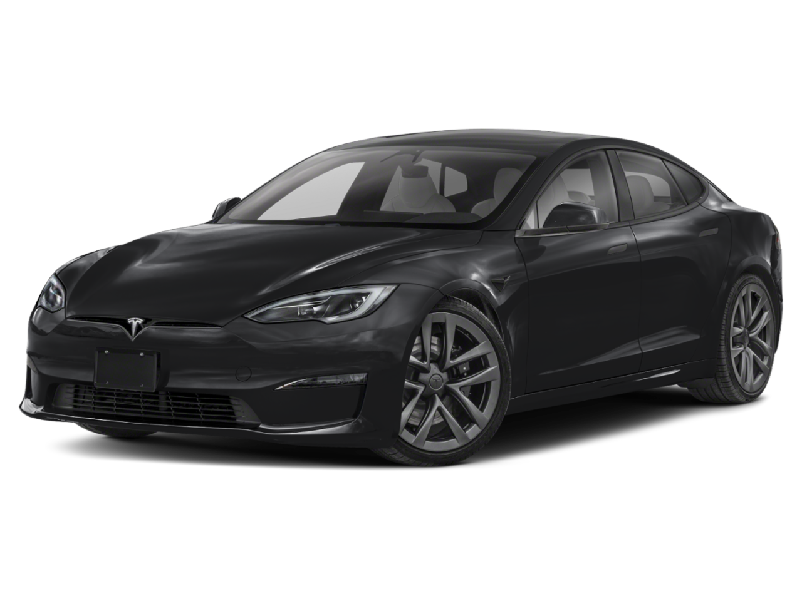
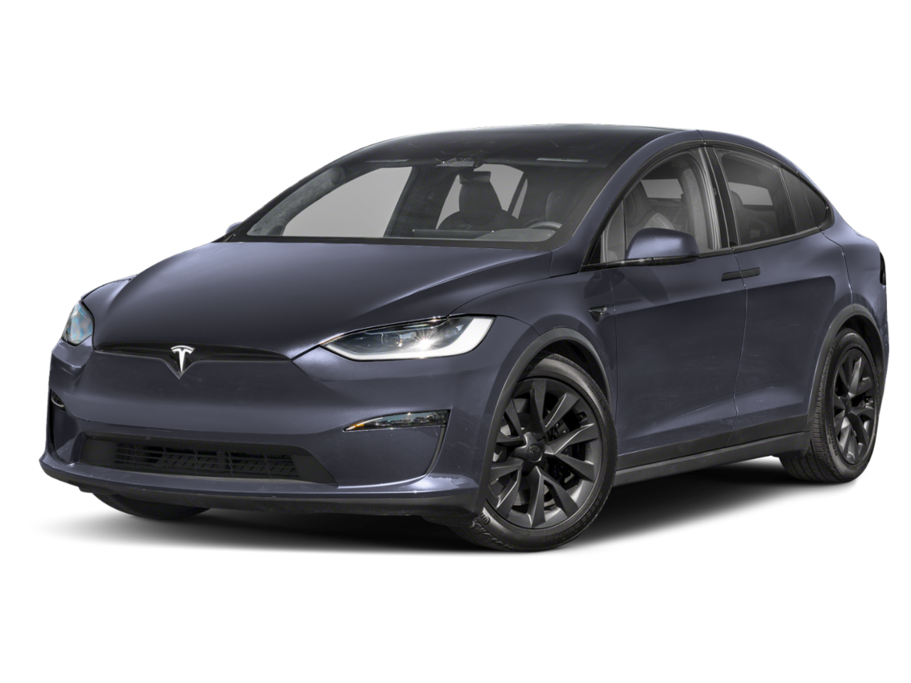
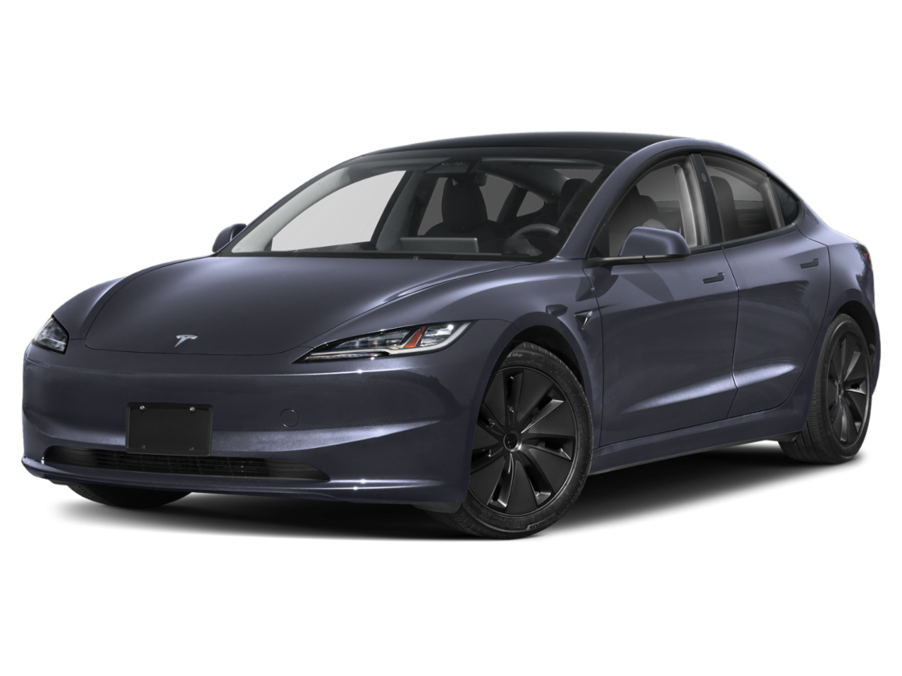
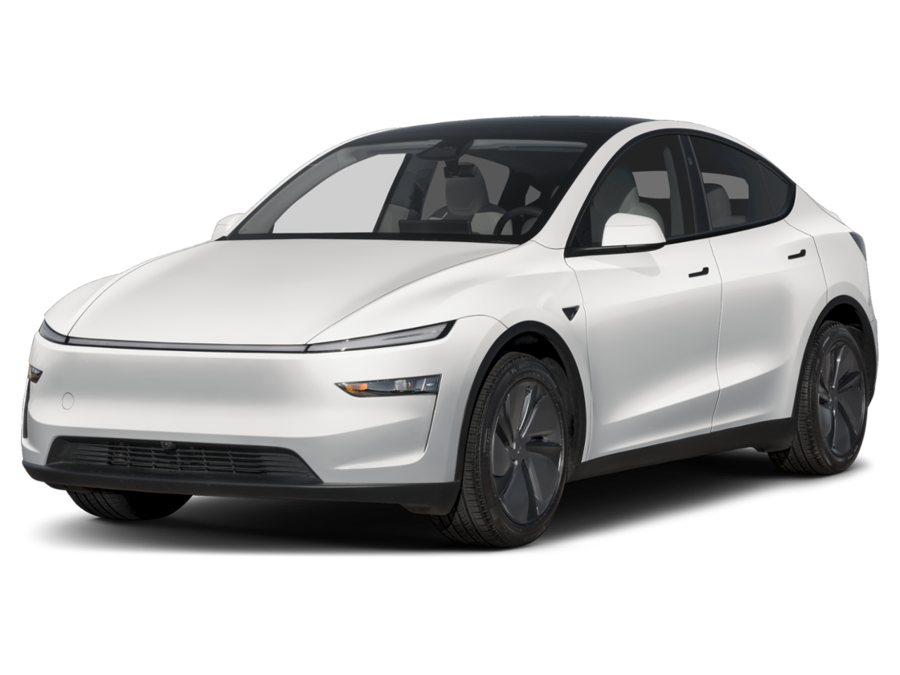

An overview of Tesla's core vehicles: the Model S, Model X, Model 3, and Model Y.
Models

Tesla Model S
Full-size luxury liftback sedan
Production2012 – Present
Starting Price~$75K – $90K
EPA Range~359 – 402 mi
0 – 60 mph3.1 sec
Top Speed130 mph
Seating5
Cargo (Seats)~28 cu ft
Cargo (Max)~61 cu ft
DrivetrainAWD
Key Features
Tesla's flagship performance sedan, famous for the ultra-fast "Plaid" trim (0–60 mph in under 2 seconds) and its distinct liftback design.

Tesla Model X
Full-size luxury crossover SUV
Production2015 – Present
Starting Price~$80K – $95K
EPA Range~326 – 335 mi
0 – 60 mph3.8 sec
Top Speed155 mph
Seating5, 6 or 7
Cargo (Seats)~37 cu ft
Cargo (Max)~92 cu ft
DrivetrainAWD
Key Features
Built on the Model S platform, noted for its dual-hinged "Falcon Wing" rear doors, panoramic windshield, and 5-, 6-, or 7-passenger seating options.

Tesla Model 3
Compact luxury sedan
Production2017 – Present
Starting Price~$39K – $55K
EPA Range~272 – 363 mi
0 – 60 mph4.2 – 5.8 sec
Top Speed125 mph
Seating5
Cargo (Seats)~24 cu ft
Cargo (Max)Not published
DrivetrainRWD or AWD
Range Detail
Depends on configuration (RWD vs. Long Range).
Key Features
Tesla's mass-market sedan, featuring a minimalist interior dominated by a single central touchscreen. Recently refreshed under the internal codename "Highland" for improved interior quietness and ride quality.

Tesla Model Y
Compact luxury crossover SUV
Production2020 – Present
Starting Price~$43K – $56K
EPA Range~260 – 310+ mi
0 – 60 mph4.6 – 6.8 sec
Top Speed125 mph
Seating5 or 7
Cargo (Seats)~30 cu ft
Cargo (Max)~74 – 76 cu ft
DrivetrainRWD or AWD
Key Features
Shares roughly 75% of its components with the Model 3 but provides higher seating, more cargo volume, and an optional 7-seat configuration. It became one of the best-selling passenger vehicles globally.
Quick Comparison Summary (as of 2026-10-15)
Model
Body Style
Launch Year
Current Status
Approx. Base Price (USD)
Max EPA Range
Model S
Luxury Sedan
2012
Active
~$75,000
~402 miles
Model X
Luxury SUV
2015
Active
~$80,000
~335 miles
Model 3
Compact Sedan
2017
Active
~$39,000
~363 miles
Model Y
Compact SUV
2020
Active
~$43,000
~310+ miles
Charging the Model 3 and Model Y: 10% to 80%
Charging from 10% to 80% adds 70% of the battery's usable capacity. For the Long Range versions, that is about 57 kWh for the Model 3 (~82 kWh pack) and 53 kWh for the Model Y (~75 kWh pack). Home charging draws roughly 10% more from the grid because of charging losses. Below is the breakdown for each model, at home and at a Tesla Supercharger.
Tesla Model 3
Long Range, ~57 kWh added (~63 kWh from the grid at home)